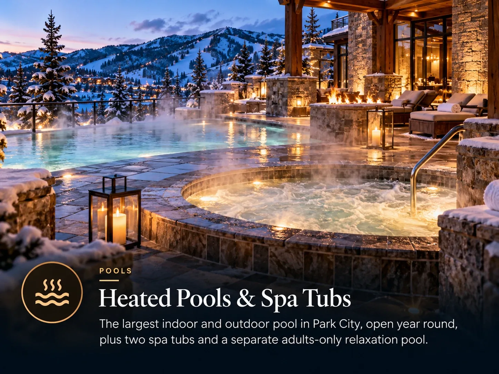

Resort amenity lists are mostly noise. A few of them change how a ski week actually goes, and they are not always the ones in the brochure.

Westgate Park City Resort & Spa sits in Canyons Village at 3000 Canyons Resort Drive, built around the base of the Red Pine Gondola. The practical consequence of a large resort is that most of what you need during the week is downstairs.
The ones that matter
Heated outdoor pools and hot tubs
Sitting in hot water outside in the snow after a day of skiing is not a gimmick. It is the thing that gets tired legs through a seven night trip, and it is the amenity families use most.
Ski rentals and storage on site
Collecting equipment without leaving the resort removes an entire errand from the first afternoon, and storing it at the base removes a daily one. See the rentals guide for what to book ahead.
Childcare and a kids programme
A supervised option on site means an evening out is possible without arranging anything externally, and it gives children somewhere to go on the day they refuse to ski.

The ones that are nice to have
- Restaurants and a bar. Including a steakhouse and a casual burger and drinks option, which covers both kinds of evening without a drive.
- A fitness centre and yoga studio. Used more than you would expect, mostly by people stretching out after day three.
- An arcade and games room. Solves the gap between skiing and dinner, particularly with teenagers.
- A marketplace. For the things you forgot, at resort prices. Fine for milk, not for a week of groceries.
- A spa. Book treatments ahead during a holiday week, because they fill.
What a resort does not replace
A full kitchen in the unit does more for a week's budget than every restaurant on site combined, and a resort marketplace is not a supermarket shop. Do the big grocery run on the way in.
Resort facilities also tend to come with a nightly resort fee. That is normal, but find out what it is before you book rather than at checkout.
Which building is the unit in, and how long is the walk to the gondola. What the nightly resort fee and any village assessment come to. Whether ski storage is included. Those three cover most of what separates a good week from an irritating one.
Common questions
Where is Westgate Park City Resort?
At 3000 Canyons Resort Drive, in Canyons Village, one of the two base areas of Park City Mountain Resort. The village is built around the base of the Red Pine Gondola.
Does Westgate Park City have pools?
Yes, heated outdoor pools and hot tubs, which are among the most used facilities on a ski trip. There is also a spa, a fitness centre, restaurants, ski rentals and a kids programme on site.
Does Westgate Park City have ski rentals on site?
Yes, there is a rental operation within the resort, along with ski storage. Booking rentals ahead is cheaper and faster than sorting it out on arrival during a busy week.
The villa this guide comes from
We own a Premier Two-Bedroom Villa inside Westgate Park City Resort, in Canyons Village. It is 1,100 square feet, two king bedrooms and two queen sleeper sofas, so it sleeps eight in one unit. Full kitchen with a centre island, two bathrooms, in-unit laundry, and a short walk to the Red Pine Gondola.
It is available for Presidents' Week 2027, 13 to 20 February, and we rent it ourselves rather than through an agency.